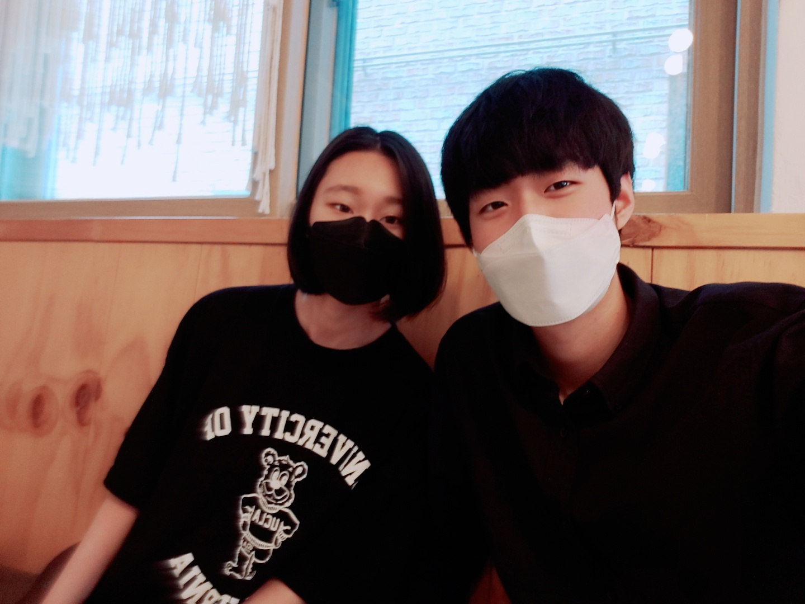

2021년 5월 22일 나에게 역사적인 사건이 일어난다.
우리는 단 둘이 만화카페를 갔고 나는 어색함과 부끄러움에 어쩔 줄 몰라 했었다.
만화 카페에서 읽은 책의 내용은 기억나지 않는다.
그러나 그 순간의 공기 분위기 떨림은 소름이 돋을 정도로 정확하게 기억난다.
나는 말 한마디 하는것 조차 힘들었고 바라보는 것 조차 많은 용기가 필요했다.
그래서 나는 오직 만화에만 집중했다, 그녀가 보기에 무뚝뚝해 보였을꺼라 장담한다.
만화 카페를 나오고 버스 정류장에서 버스를 기다리는데
어색한 공기와 내 속에 억눌러 있던 말이 스믈스믈 기어 나오더니
버티지 못하고 터져나왔다, 어떨결에 고백을 해버린 것이다.
나는 말하면서도 후회하고 있었다, 좀 분위기 있게 하고싶었다.
그러나 그녀는 후회를 눈 씻고 봐도 볼 수 없게 만들어줬다.
그날 나의 첫 연애가 시작되었다.
